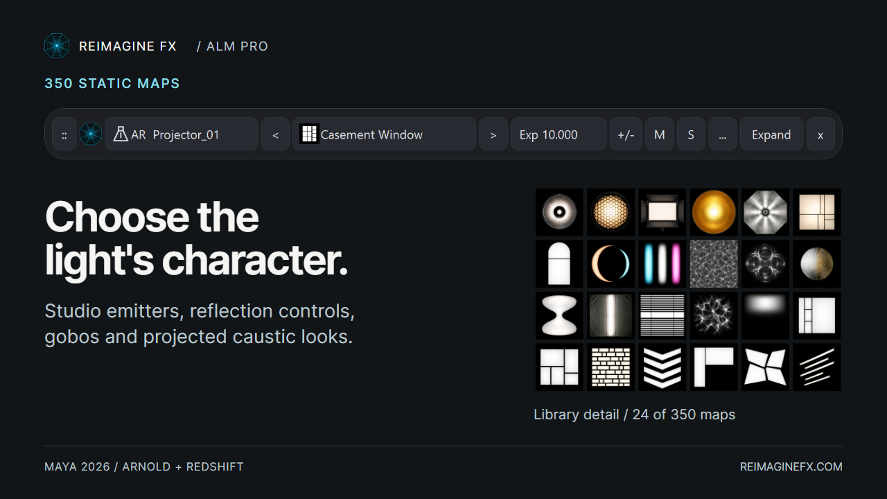
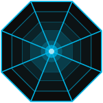
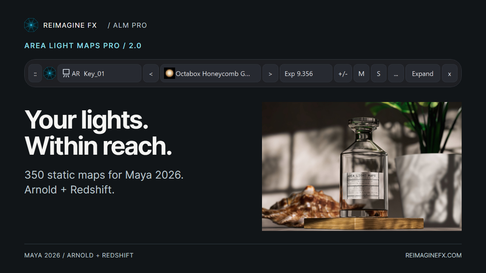
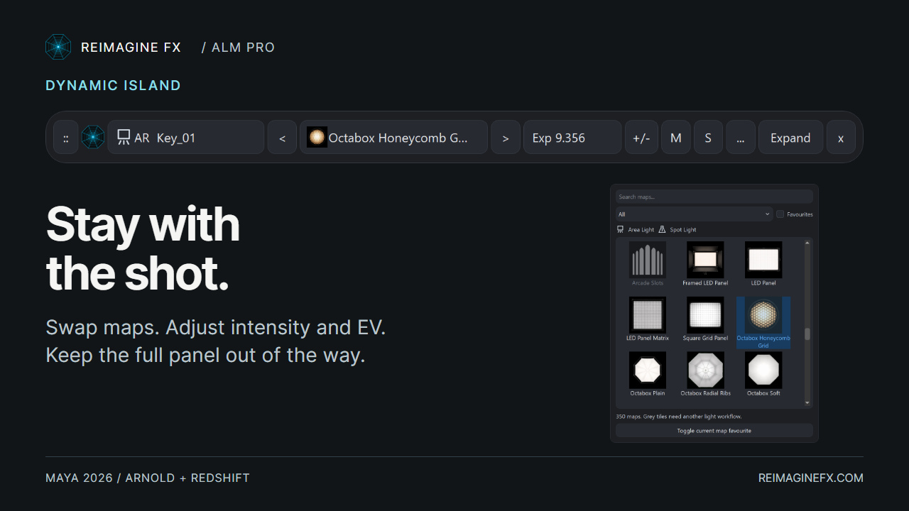
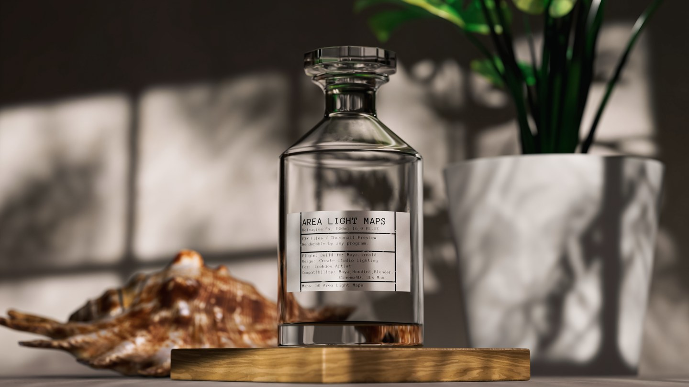
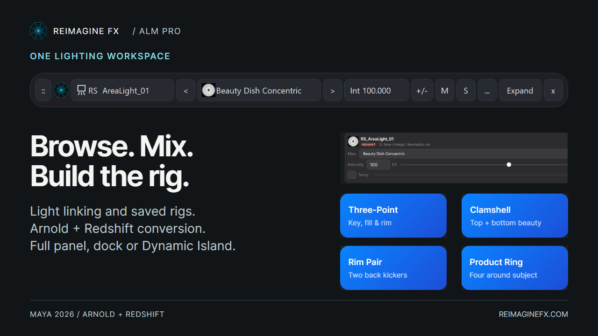

350 static EXR maps
Choose a studio emitter such as an octabox, beauty dish or strip light. Use a spotlight projector for window and foliage gobos. The caustic looks are static textures projected onto the scene.

Area Light Maps Pro 2.0Pick a light, swap its map and adjust exposure beside the Maya viewport while you watch the render.
350 static EXR maps · Arnold + Redshift · Maya 2026 on Windows

Dynamic Island keeps the selected light, map picker and exposure controls beside the viewport. Try a narrower emitter on the key, mute the fill or solo a light while the render is in view.
Expand to the full panel when you need more room to work.

A narrow reflection traces the perfume bottle’s edge. The surrounding projected pattern breaks up the light across the set.


Choose a studio emitter such as an octabox, beauty dish or strip light. Use a spotlight projector for window and foliage gobos. The caustic looks are static textures projected onto the scene.

Dock the browser beside the viewport. Apply maps to supported lights or create a mapped light, then balance the scene with the mixer, link lights to objects and save studio rigs for reuse.
Yes. Pick a compatible Arnold or Redshift light and apply the map. You can also create a mapped light from the browser.
Install the renderer you use. Both are required when converting supported area lights between Arnold and Redshift.
Save the ALM lights as a rig preset, then load the preset in the next scene.
For Maya 2026 on Windows with Arnold or Redshift.
Get it on Gumroad · US$29.99